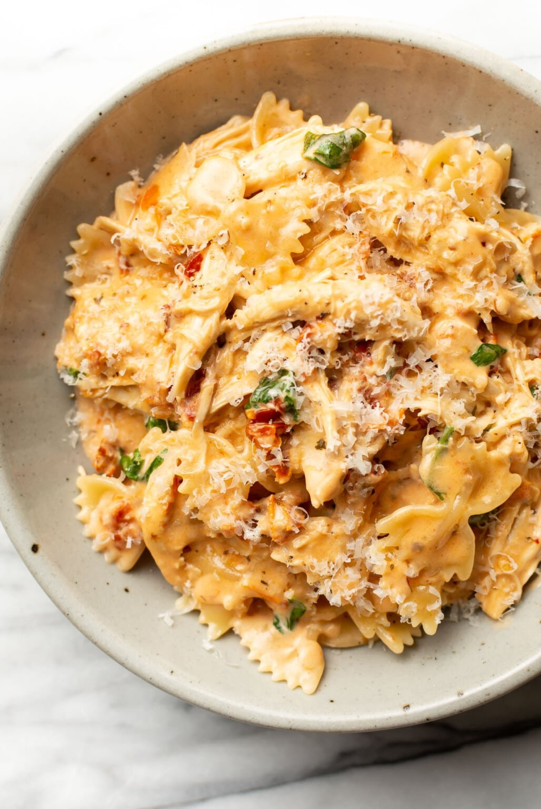

Marry Me Chicken

Description:
Craving Italian at home? We have you covered, with an easy and delicious dish for cooks of all experience!
Ingredients
- 1 Pound Chicken
- 1/2 Pound Pasta
- 1/4 Cup Sun-Dried Tomatoes, julienned(plus oil)
- 2 Tablespoons Butter
- 1 Medium Shallot, Diced
- 1 teaspoon Salt, To taste
- 1 teaspoon Italian Seasoning
- 1/2 teaspoon Onion Powder
- 1 teaspoon Pepper, To taste
- 1/2 teaspoon Paprika, (can sub smoked)
- Dash of Cayenne, Optional
- 1/2 teaspoon Red Pepper, To taste
- 6-8 Cloves Garlic, To taste
- Olive Oil
- 2.5 Cups Chicken Broth
- 1/2 Cups Half & Half (or cream)
- Fresh Basil, torn, to taste
Steps
- In a large sauce pan, heat about 1 T of sun-dried tomato oil and 1 T butter over medium heat. Cook your chicken until no longer pink and set aside. Cut into bite-sized pieces.
- Reduce heat to low and add in another T of butter along with your shallot and seasonings. Cook for 2-3 minutes (add in some olive oil if needed). Add in your garlic and cook for another minute.
- Pour in your chicken broth, scraping up any brown bits on the bottom of the pan. Bring to a simmer, add in your pasta, and stir. Cover and simmer until al dente, about 10-15 minutes, stirring every few minutes.
- Once your pasta is done, add in your half and half, sun-dried tomatoes, and parmesean. Stir until melted.
- Add in your cooked chicken, and basil. Serve immediately and top with more fresh parmesean.
Home